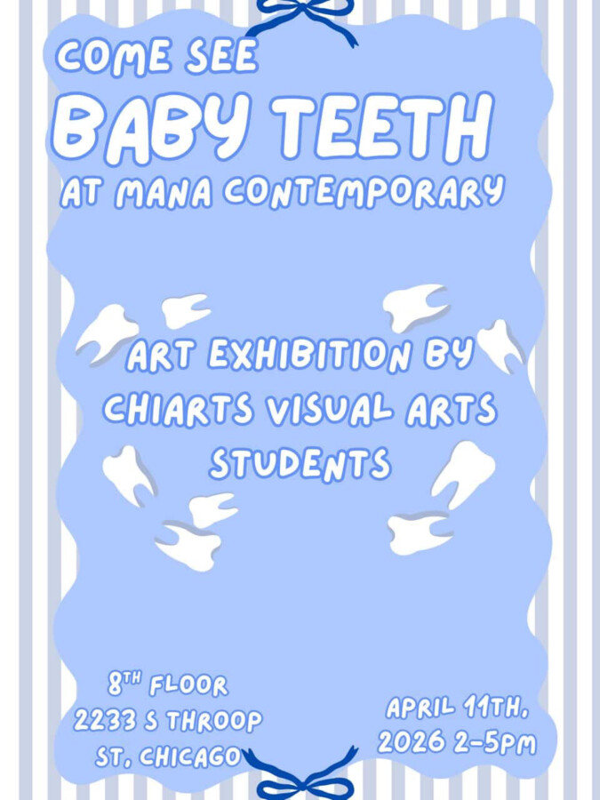

Baby Teeth Art Exhibition
Baby Teeth Art Exhibition
ChiArts Visual Artists from the sophomore class, in collaboration with Teaching Artist Frank Vega, have spent three weeks creating unique pieces for Baby Teeth, a public arts exhibition taking place in MANA Contemporary’s spring open studios. Important to note; all ChiArts pieces are up for sale; with all proceeds funding classroom supplies and scholar-artists.
At the heart of this exhibition is the question: “Why is art important?”
Through their responses, students reflect on personal experiences, identity, and community.
Baby Teeth Art Exhibition
April 11th 2026 | 2:00pm – 5:00pm
Mana Contemporary, 2233 S Throop St, Chicago